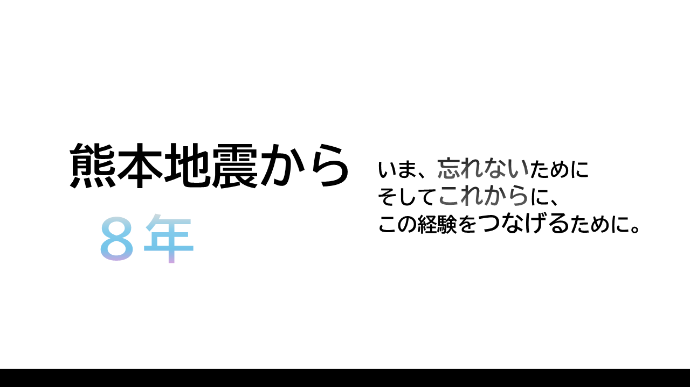

この日に熊本県を震源とし大きな地震がありました。
気象庁震度階級では最も大きい震度7を観測する地震が4月14日に発生し、
その後も揺れは相次いで発生し、翌日以降も非常に強い揺れがあった。
様々なメディアの記録から
熊本県益城町で観測された揺れの大きさは計測震度6.7で
東北地方太平洋沖地震の時に宮城県栗原市で観測された揺れ（計測震度6.6）を上回り、
国内観測史上最大となっていたことも分かっている。-1
当時の状況についての資料や、各引用元のリンクの一覧です。
上記のような資料など残っているもの、また独自の調査などにより制作されています。
また引用元には『-』が付帯しているため区別しやすくなっています。
資料は随時公開していきます。